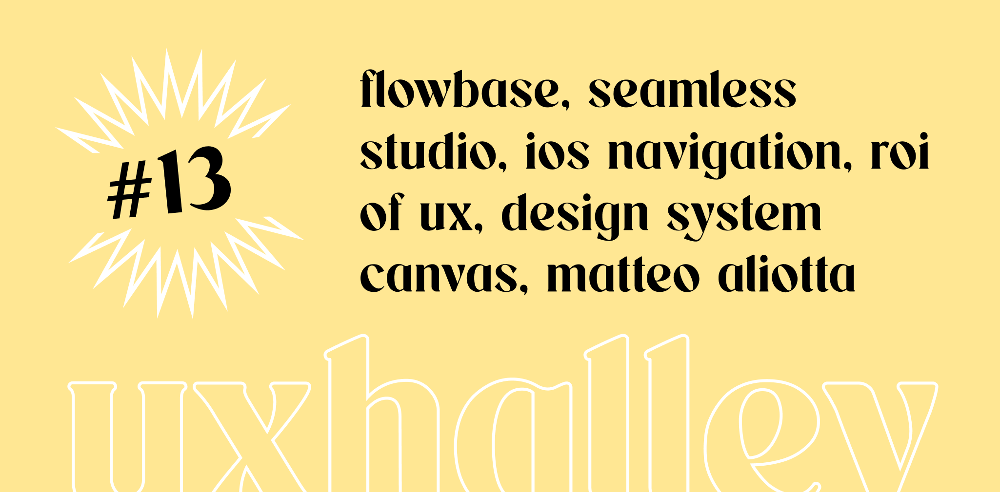

UX Halley, newsletter per designer
uxhalley, edizione #13
27 marzo 2023 — UX Halley: una newsletter bisettimanale che raccoglie news e links utili sulla UX. Le regole sono semplici: max 5 minuti di lettura; se ti interessa, lo approfondisci; se ti piace, lo condividi; a prescindere ci vediamo tra due settimane. Facile facile.
Immagine di copertina dell'edizione di UX Halley, newsetter per designer
Link per designer suggerito nell'edizione di UX Halley, newsletter per designer
webflow & figma
Migliaia di componenti di design pronti da utilizzare per #webflow e #figma. Cerchi, trovi, clicchi, copi e incolli. Fatto. È incredibile come un tool del genere possa accelerare il workflow di progettazione, che sia di wireframe o altro, non puoi non averlo.
Link per designer suggerito nell'edizione di UX Halley, newsletter per designer
bye bye mockups
Ormai termini come #chatgpt e #ai sono sulla bocca praticamente di ogni persona, praticamente ogni giorno. Come diciamo a Roma, "cicciano" tool di design basati sull'AI a vista d'occhio. Questo tool secondo me è uno di quelli che merita attenzione. Potrai dire addio ai #mockup fatti a mano.
Link per designer suggerito nell'edizione di UX Halley, newsletter per designer
design system
Estremamente formativo ed estremamente utile. Ecco cosa penso di questo tool (un canvas) che aiuta te, come persona singola o in collaborazione con il tuo team, a progettare un metodo per progettare bene (o meglio) un designsystem da zero.
Link per designer suggerito nell'edizione di UX Halley, newsletter per designer
navigazione iOS
Sarà pur vero che le Human Interface Guidelines sono i "fondamentali" della progettazione, soprattutto per chi si occupa di #app per #ios, ma posso permettermi di dire che ho trovato questo articolo molto utile e ben fatto, quasi più delle stesse HIG. Si parla di navigazione iOS, che spesso è misteriosa.
Link per designer suggerito nell'edizione di UX Halley, newsletter per designer
il ROI della ux
Diversamente da altri ambiti in cui questa #kpi di business, ovvero il #roi (detto anche Return Of Investment), è più semplice da calcolare perché spesso basata su dati chiari, nel caso della #ux il ROI è un tema molto complesso. Questo articolo descrive un metodo empirico, e a mio avviso valido, per calcolarlo.
Link per designer suggerito nell'edizione di UX Halley, newsletter per designer
matteo aliotta
Ho conosciuto Matteo Aliotta anni fa, nell'ecosistema #startup in quel di LUISS ENLABS. Lo seguivo sui social da tempo ma ammetto che non seguivo la sua newsletter. Qualche giorno fa mi sono iscritto e ne ho ricevuta una che già da sola è bastata per farlo entrare su UX Halley. T'ho detto tutto :)
Link per designer suggerito nell'edizione di UX Halley, newsletter per designer
contra
Bomba della settimana trovata per caso. Se sei freelance Contra sembra essere un posto veramente interessante. Oltre a trovarti lavoro stanno lanciando un tool online per creare portfolio che, almeno dagli spoiler e da come lo raccontano, sembra essere veramente interessante. Provalo!